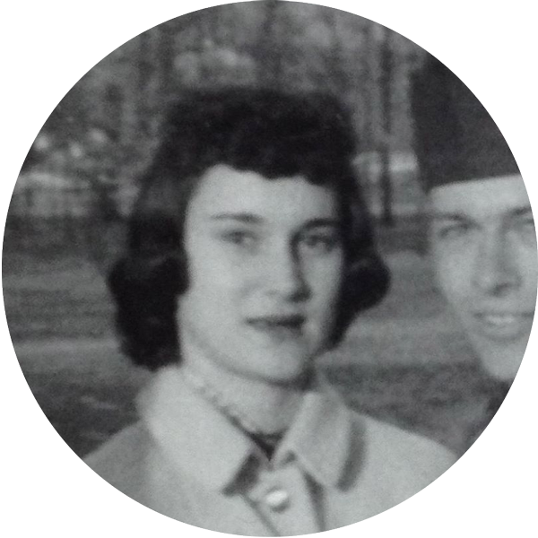
"65401" is an interactive installation that visualizes the life of a real estate agent in a rural Missouri town in 1988 through metadata taken from her datebook.
Now more than ever, people interested in quantifying life experiences have access to an unprecedented deluge of information about their own personal health, travel and communication patterns. Lifelogging projects in the connected age analyze and visualize these rich trails of data that are a byproduct of life online.
Unlike most lifelogging projects, however, this installation interprets metadata extracted from a physical, non-digital artifact. 65401 is an interactive visualization of a small town in the Ozark mountains generated from the personal datebook my grandmother used when she worked as a real estate agent in the 1980s. Viewers use a tangible interface to generate a map of the town based off addresses, phone numbers and locations mentioned in this journal.
The goal of this installation is to map this geographic metadata in a public gallery context without revealing any of the diary's original contents. The project explores data visualization theory, crowdsourced human intelligence, the limits of computer vision, and the interaction design of tangible interfaces.
There is a kind of magic to a map... We explore an area, we document it. And in doing so we create a thing, an artifact, that outlines and represents our understanding of that space. — Ethan Marcotte
The process of visualizing intangible data in physical installations is an exciting and relatively new area of study. This installation process has been informed and inspired by the following projects.
Creators: Timo Arnall, Jørn Knutsen and Einar Sneve Martinussen
"This project explores the invisible terrain of WiFi networks in urban spaces by light painting signal strength in long-exposure photographs. A four-meter tall measuring rod with 80 points of light reveals cross-sections through WiFi networks using a photographic technique called light-painting."
Creators: Aaron Koblin, Nik Hafermaas, and Dan Goods
"The eCLOUD is a dynamic sculpture inspired by the volume and behavior of an idealized cloud. Made from unique polycarbonate tiles that can fade between transparent and opaque states, its patterns are transformed periodically by real time weather from around the world."
Creators: Nicholas Felton
"Nicholas Felton spends much of his time thinking about data, charts and our daily routines. He is the author of many Personal Annual Reports that weave numerous measurements into a tapestry of graphs, maps and statistics reflecting the year's activities."
Creators: Mark Hansen and Ben Rubin
"In Listening Post, viewers are immersed in a sonification and visualization of thousands of simultaneous conversations happening on the internet at that moment in real-time. An arched wall of hundreds of small screens display ever-changing text in a cool glowing blue. Electronically-generated voices in both a pitched-monotone and natural-inflection sing out the text from every corner of the room singly, overlapping, or in strange harmonies."
Extracting the data to be visualized for my project was a time consuming endeavor. During this phase of the project, I discovered that optical character recognition software doesn't work with handwritten letters. Although I have access to journals from 1988, 1989 and 1990, I found that I would only have enough time to encode and visualize one of these years. My challenge was to encode 300 JPG scanned images of handwritten notes with scribbles, doodles and coffee stains into something that can be parsed by a computer.
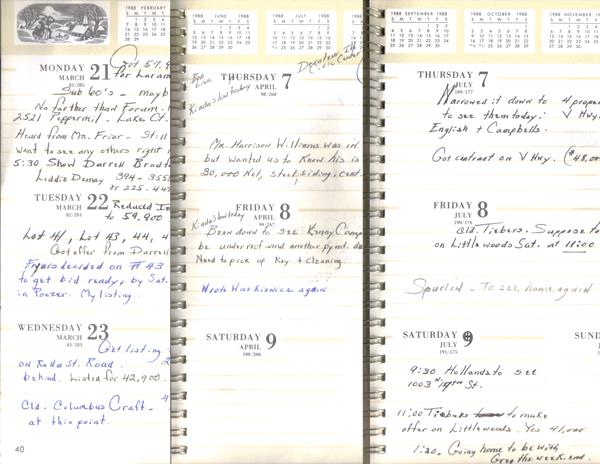
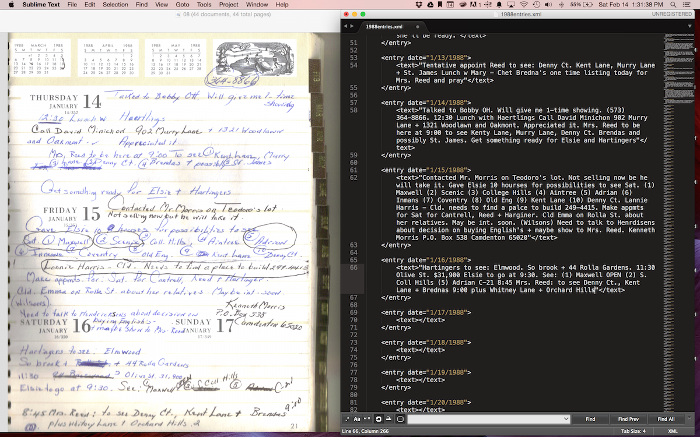
I turned to Amazon Mechanical Turk to try to minimize the hours I would spend hand copying her notes into a XML document. I funded my AMT account with $10 and created 43 Human Intelligence Tasks. Only 5 of 43 were submitted, however, so I had to try another strategy to finish the project.
Once the information was organized in a digital file, I was able to explore several data visualization strategies. Before I knew I wanted to focus on geographic information, I first created a test visualization that shows word count per entry in my grandmother's diary from January 1986. Each column represents one entry and each dot in that row represents a word.
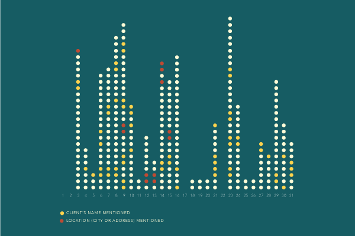
The visualization above looked at the frequency of times my grandmother mentioned a location in her journal, but it didn't give any sense of what that location looked like. For my second prototype, I wanted to viscerally connect the audience to the real locations my grandmother mentioned in her diary.
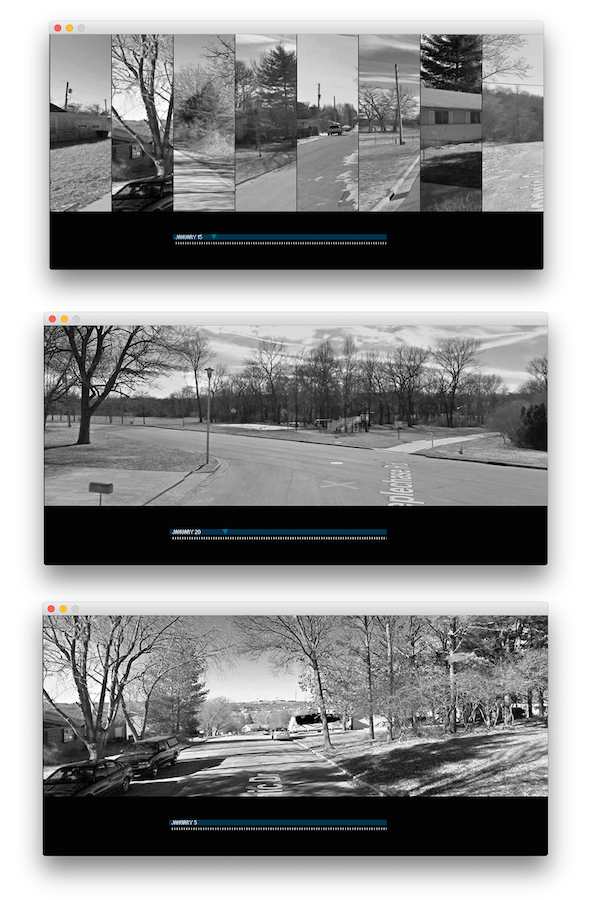
A third prototype during the exploration period of this project involved designing a system that compared the geographic metadata of individual entries to the textual information contained within each entry.
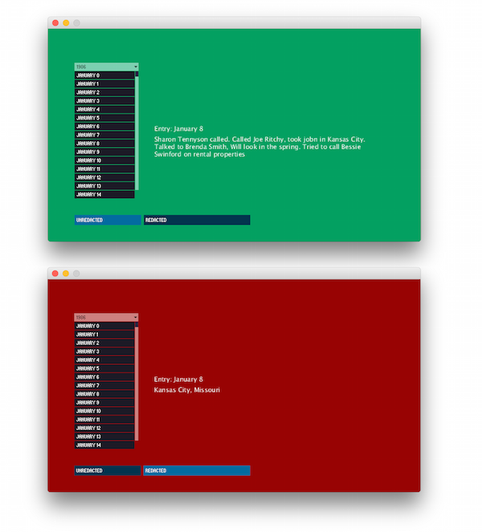
As I was working on the third prototype, I noticed that my grandmother's entries often contained 10 digit sequences of numbers. After looking a few of them up, I uncovered that many of these were long distance telephone numbers to area codes outside of the state of Missouri. After getting a CSV with each date and phone number, I used Whitepages' Pro Graph API to map the phone numbers to specific addresses if possible and to zip codes if necessary.
The final section of the project I worked on was organizing all addresses mentioned in the 1988 datebook into a comprehensive geoJSON file. Each location can now be given an infinite number of specific attributes, such as week or month visited, associated clients or styling information.
I finally settled on an 8x8 grid visualization to map the locations that my grandmother mentioned in her journal. Presenting the information with such low fidelity represents the inexact nature of the handwritten data set and data extraction process.
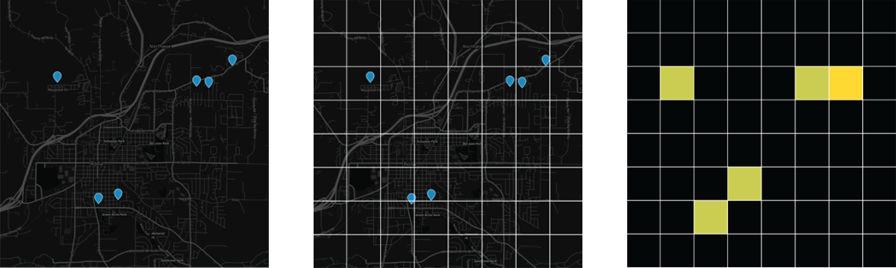
The final part of the project involves building the physical installation and coding the interactive interface. To reflect the fact that the information being visualized was originally stored in a physical artifact, I wanted my interface to be uniquely tactile. Viewers will navigate throughout time by twisting a physical control knob.
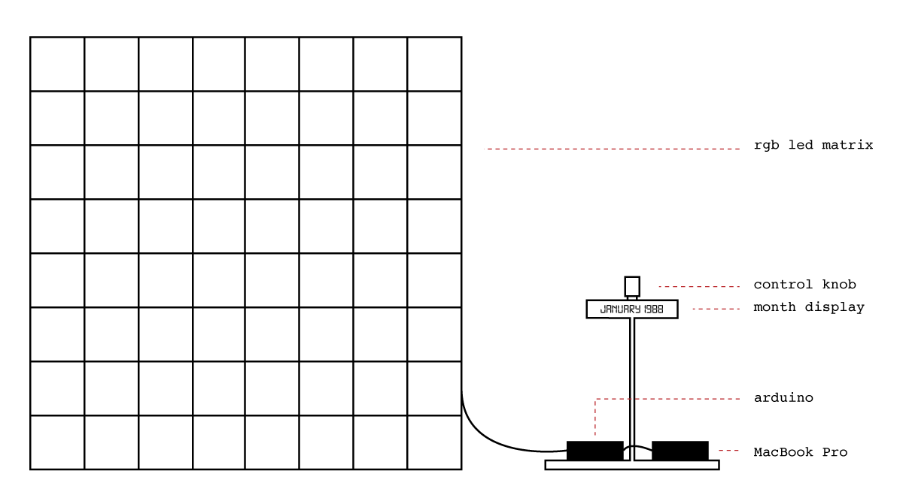
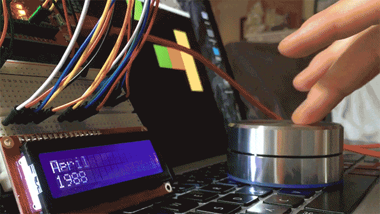
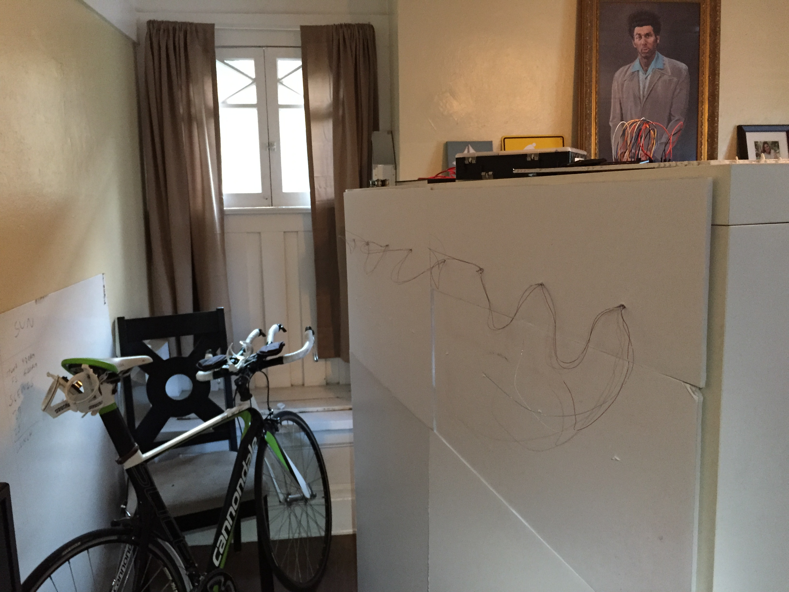
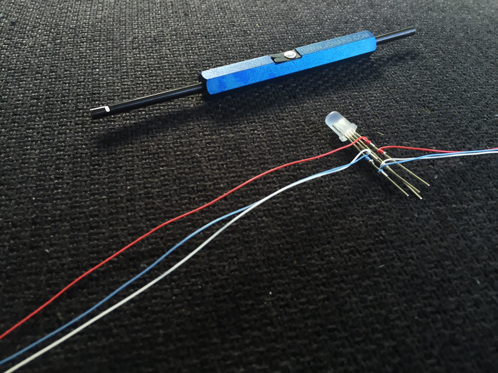
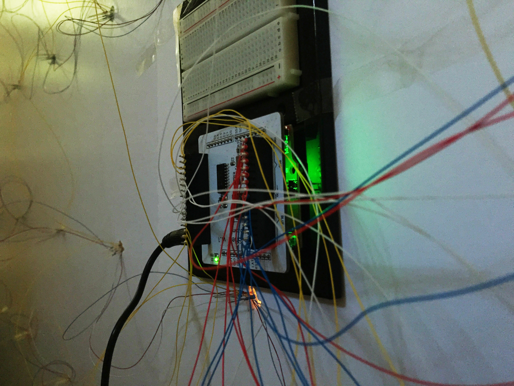
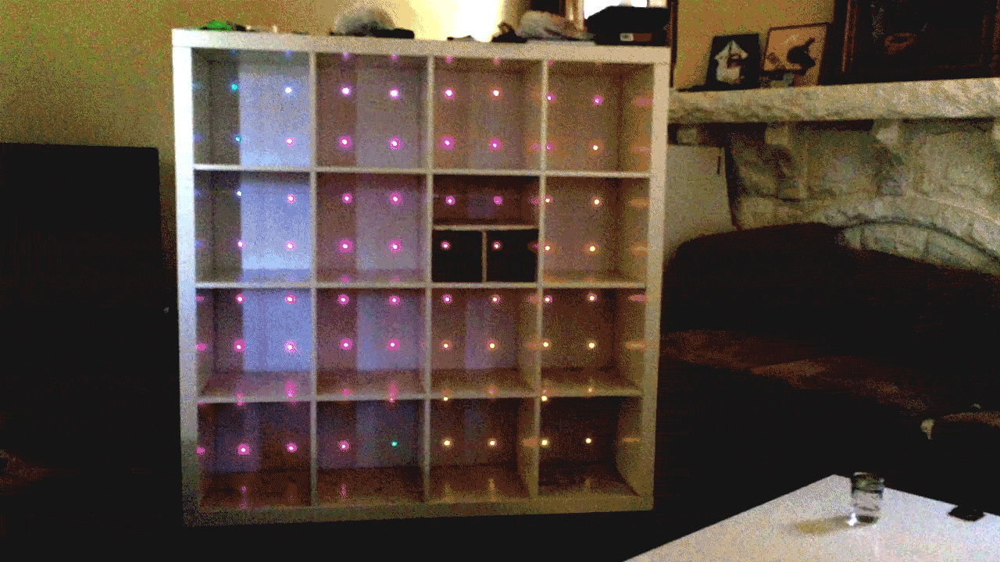
The project was installed at the USC School of Cinematic Arts during the Media Arts + Practice thesis showcase from May 10 - 13. Since this was my first time designing an interactive installation, I learned a lot about designing phsyical things. After watching my visitors interact with the map, it was clear I should have paid more attention to the control dial.
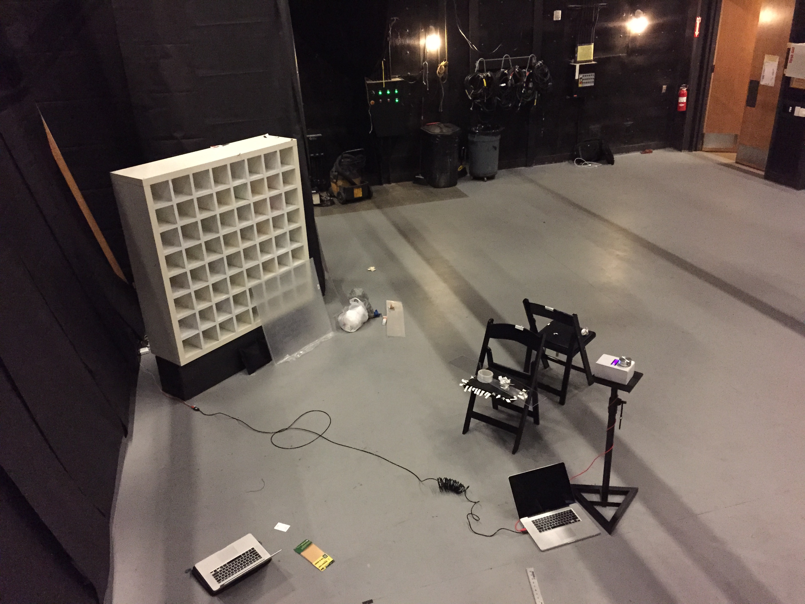
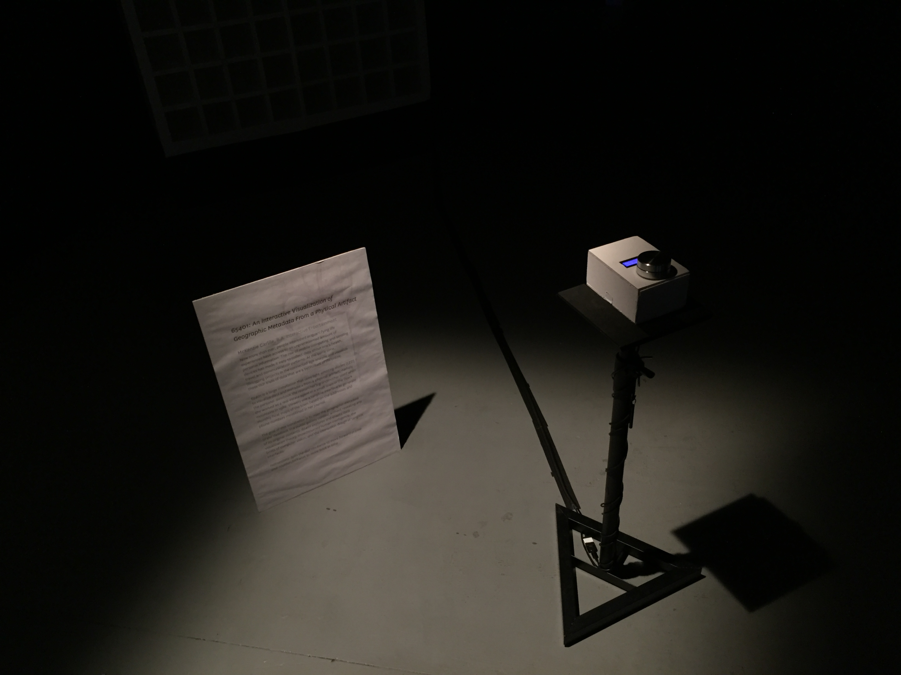
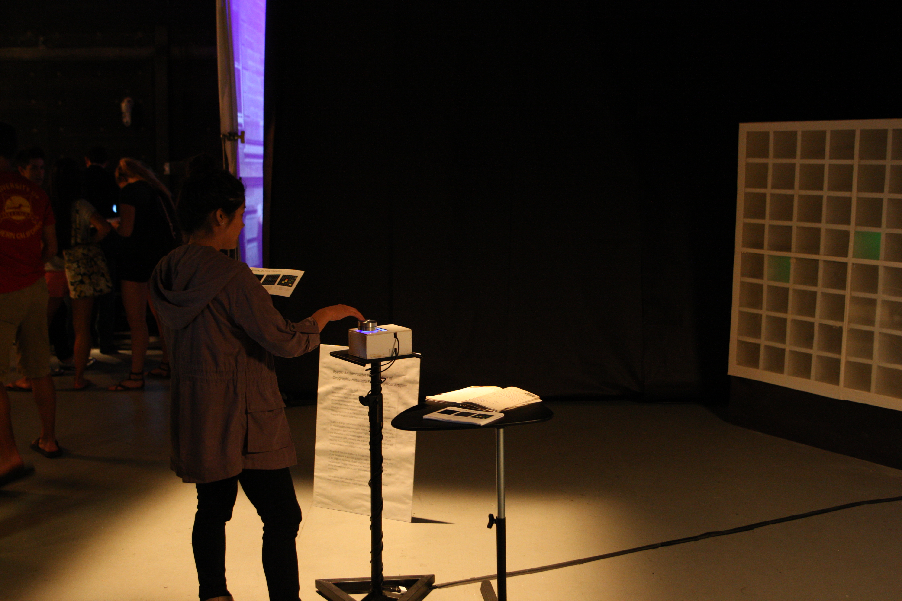
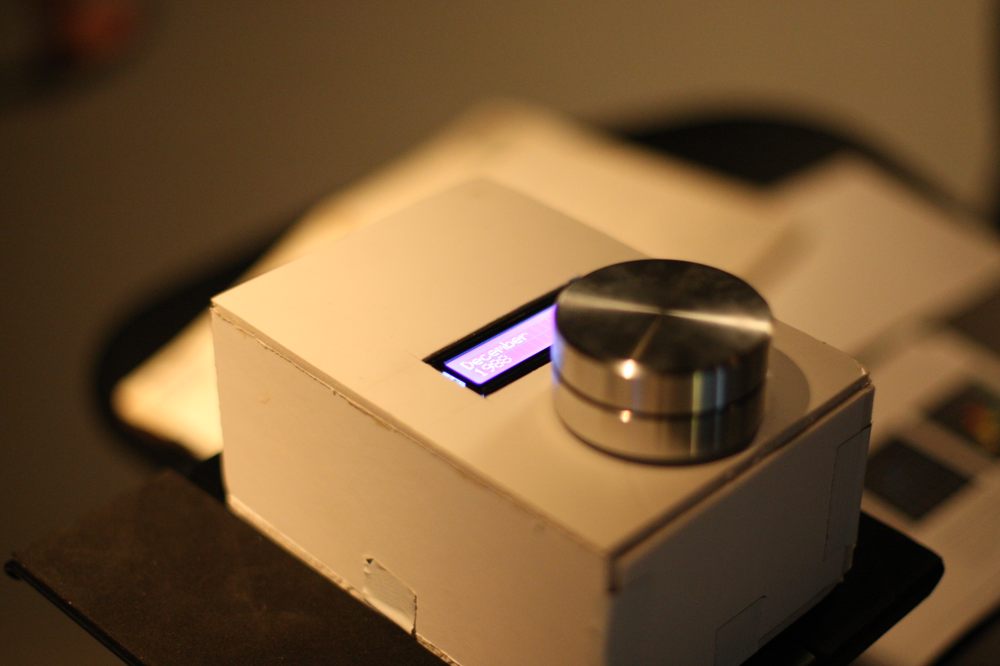
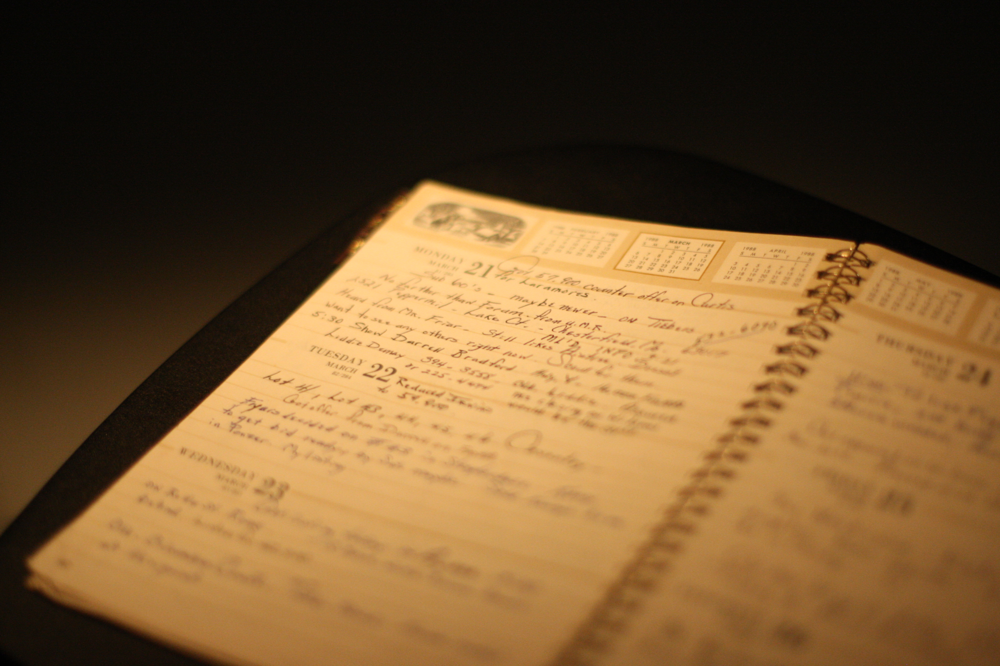
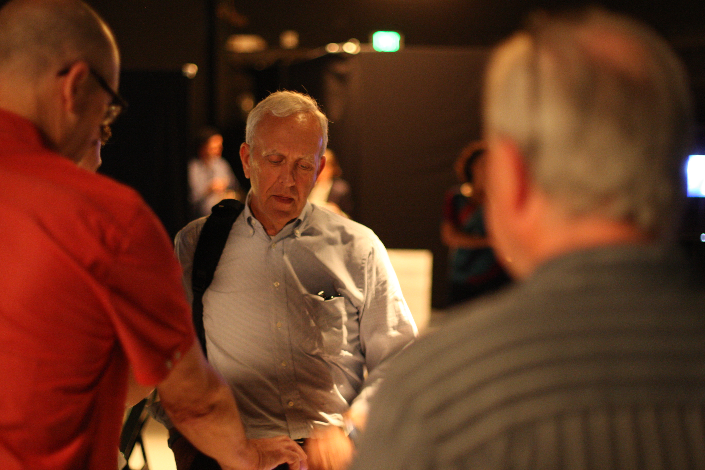
If I could have more time to rebuild the project, I would have made it smaller and brighter and I wouldn't have messed with retrofitting it into a preexisting cabinet. It could have been much more precise if I had built the frame out of wood and laquered it myself.
Still, this thesis project was a joy because it gave me a chance to work with my hands and build something tangible. I can't wait to work on the next installation project!
I think of my datebook as an external information organ, a piece of my brain made out of paper instead of cells. — Michelle Hublinka